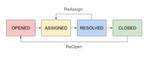

ソフトウェアテスト - Gunosy Tech Blog
https://tech.gunosy.io/archive/category/%E3%82%BD%E3%83%95%E3%83%88%E3%82%A6%E3%82%A7%E3%82%A2%E3%83%86%E3%82%B9%E3%83%88
Gunosy Tech Blogは株式会社Gunosyのエンジニアが知見を共有する技術ブログです。
フィード

QAのバグトラッキングで大切なこと 2
2
ソフトウェアテスト - Gunosy Tech Blog
こんにちは。QA チームの miyagi です。 この記事は Gunosy Advent Calendar 2024 の 16 日目の記事です。 昨日の記事は igtm さんの「LLM を用いた PDF を元にした回答と、該当箇所のハイライト」でした。 今回は開発と QA におけるバグトラッキングについての記事となります。 はじめに Gunosy のバグトラッキングについて バグのワークフローと JIRA を利用した管理 ワークフローの詳細 バグトラッキングで重要なポイント まとめ はじめに Gunosy ではバグトラッキングシステム (BTS) として JIRA を活用しています。 今回は …
9日前

GitHubActionsでMagicPodとTestRailを連携しました
ソフトウェアテスト - Gunosy Tech Blog
こんにちは。QAチームの宮城です。 GitHub Actionsを使って自動テストの結果をテスト管理ツールに登録する運用を開始しましたので、今回はその内容について紹介します。 GitHub Actionsを選択した経緯 JenkinsとGitHub Actionsを両方試してみて Jenkinsの良かったところ Jenkinsの良くなかったところ GitHub Actionsにすると 自動化の概要 自動化の手順 スクリプトの準備 ワークフローの設定 ワークフローの実行 おわりに GitHub Actionsを選択した経緯 QAチームでは自動テストツール(MagicPod)とテストケースの管理ツ…
3ヶ月前
MagicPodの自動テストの結果入力を自動化しました
ソフトウェアテスト - Gunosy Tech Blog
こんにちは。QAチームのmiyagiです。 QAチームで活用しているテスト自動化ツール「MagicPod」と、テスト管理ツール「TestRail」を連携させ、自動テストの結果入力をJenkinsで自動化しました。 この記事では、連携に必要な環境構築や手順について紹介します。 Jenkins MagicPodとTestRailについて 自動化の手順 実行するテストケースとテスト実行設定の準備 PythonスクリプトとAPI利用の準備 APIキーの発行 Pythonスクリプトのカスタマイズ Jenkinsの準備 Jenkinsのパイプラインの設定 実行した結果 Jenkins MagicPod T…
8ヶ月前
Gunosyでテスト自動化ツール「MagicPod」を活用している話
ソフトウェアテスト - Gunosy Tech Blog
こんにちは。QAチームのmiyagiです。 今回はQAチームで導入しているテスト自動化ツール「MagicPod」でどのようなテストを行っているかご紹介します。 MagicPodについて MagicPodを使ってやっていること 回帰テストの自動化 相互運用性テスト MagicPodによる自動テストを導入して良かったこと 現状の課題と今後について MagicPodについて GunosyのQAチームでは、テスト自動化ツールとして「MagicPod」を導入しています。 MagicPodはプログラミング知識がなくても簡単に自動テストのスクリプトを作成することができる便利なツールです。 ブラウザのテストの…
1年前
JaSST'22 Tokyo 参加レポート
ソフトウェアテスト - Gunosy Tech Blog
QAチームのkorokiとmiyagiです。 3/10-11にオンラインで開催されたJaSST'22 Tokyoに参加しました。 JaSSTはソフトウェアテスト技術振興協会(ASTER)が開催する、テスト技術力の向上と普及を目的としたソフトウェアテストシンポジウムです。 今回は、興味深かったセッションをいくつかピックアップして共有したいと思います。 基調講演「Competing with Unicorns」 「60分で学ぶ実践E2Eテスト」 「品質エンジニアリングと自動化後の世界」 「テスト設計の意図を届けよう」 まとめ 基調講演「Competing with Unicorns」 こちらはSp…
3年前
STARWEST参加レポート〜ぼっちで海外TestingConference〜
ソフトウェアテスト - Gunosy Tech Blog
こんにちは！QAエンジニアの関根です。 いつも国内の話なのですが、今回はなんと海外！ 2019/9/30〜2019/10/4の日程でアメリカのカリフォルニア州アナハイムで開催されたSTARWEST19に参加してきました!!!! 会場@Disneyland Hotel 今回の目的 STARWESTとは（知らない人のために カンファレンスの様子 ぼっちで参加ってどうなのよ？ セッション紹介（いくつかピックアップして Privacy in a Time of Rich Telemetry Make Your UI Tests Resilient with the Next Generation of…
5年前
SeleniumConf Tokyo 2019に参加してきました
ソフトウェアテスト - Gunosy Tech Blog
久しぶりの投稿になります、QAチームの関根です。 先日開催された、SeleniumConf Tokyo 2019に参加レポートになります。 Gunosyでは自動テストをQAチーム内で進めています。 はじめに Day1 LINEのサービスを支えるSelenium/Appium 週次リリースにおけるテスト Day2 Testing for an Inclusive Web: Accessibility Testing Journey of CI/CD Pipeline Improvement in Yahoo! JAPAN LIFULL HOME'Sのリリースを支える技術 最後に はじめに Sel…
6年前
JaSST'19 Tokyo 参加レポート
ソフトウェアテスト - Gunosy Tech Blog
こんにちは、QAチームの tanakaとarasawaです。 先日、3月27〜28日に開催されたJaSST'19 Tokyo(ソフトウェアシンポジウム 東京)に参加してきました。 www.jasst.jp JaSSTはソフトウェア業界全体のテスト技術力向上と普及を目指しているもので、 毎年様々な地域で開催されています。 今回様々なセッションがあったなかで、面白かった、勉強になったセッションを取り上げて、共有したいと思います。
6年前
人気のテスト管理ツール「qTest」と「PractiTest」を触ってみたよ
ソフトウェアテスト - Gunosy Tech Blog
こんにちは、QAチームのTeiiとakinkです。 この記事は Gunosy Advent Calendar 2018、14日目の記事です。 昨日の記事ははよんさんのUIデザインにおけるKPI設定の重要性でした。 はじめに テストプロセスをより良いものにするため、現在アジャイルチームと親和性の高いテスト管理ツール導入を検討しています。 そこで、Top 20 Best Test Management Tools (New 2023 Rankings) という記事で評価が高かったqTestとPractiTest を試しに触ってみたので、個人的な感想も踏まえて紹介したいと思います。 実際のプロジェク…
6年前
JaSST'18 Tokyo 参加レポート
ソフトウェアテスト - Gunosy Tech Blog
久々の投稿になります。QAエンジニアの関根です。 今年は色々参加してみようと思い、3/7-8でJaSST'18 Tokyoに参加してきました。 （実は初めて 笑 はじめに 日本最大のシンポジウムとのことで、今年こそはと意気込んで参加しました。 参加セッションは個人的に有意義であったりそうでなかったりとあったので、いくつかかいつまんで書きます。 基調講演 「Advances in Continuous Integration Testing at Google」 GoolgeのJohn Miccoさんが来日されてお話ししてくれました。 Googleではマニュアルテストを全くしておらずほぼ全てが自…
7年前
Gunosyの広告管理画面を支えるE2Eテスト
ソフトウェアテスト - Gunosy Tech Blog
広告技術部のサンドバーグと星です。 普段の業務は、主に広告の管理システムの開発をしています。管理画面はRuby on Railsで作られており、今回は煩雑になりがちなE2Eのテストをきれいに書けたので、それについて話します。 背景 Gunosyの広告システムは4年以上前にリリースされ、これまで多くの機能が追加されてきました。 配信システムは一度リプレースされましたが、私達が運用している管理画面に関してはリプレース などはされず、現在も拡張され続けています。長く運用されているシステムのため 開発するメンバーの入れ替わりもあり、もちろん思想やコードスタイルも変わってきたため、 バグが発生しやすい環…
7年前
ソフトウェア品質シンポジウム2017に参加してきました(2日目)
ソフトウェアテスト - Gunosy Tech Blog
はじめまして、QAエンジニアの関根です。 今回2日間参加させていただいて、僕の方では2日目をメインで書きたいと思います。 会場は1日目に引き続き東洋大学（白山キャンパス） 2日間ここから入ってますが、きっと正面入り口ではない気がします。。。 2日目の注目はマネーフォワード市川さん FinTechトレンドをリードするサービス開発のポイント 「品質」「スピード」「セキュリティ」と題してお話お伺いできました。 FintechってどうやってQAやってるのか、発表を聴く前からかなり興味津々でした。 QA専属のチームはいない（なんと！） 自動化コードを書いているのと、エンジニアの相互レビューでバグを潰して…
7年前
『品質』ってなんだ・・・！ソフトウェア品質シンポジウム2017へ行ってきました(1日目)
ソフトウェアテスト - Gunosy Tech Blog
ソフトウェア品質シンポジウム2017へ行ってきました こんにちは、運用推進開発部QAチームの id: qa00qaです。 突然ですが、みなさんソフトウェア品質ってなんですか？ QAチームは先日開催されたソフトウェア品質シンポジウム2017へ行ってきました。 会場 会場は東洋大学 白山キャンパス。 白山駅から徒歩5分ほどの場所にあります。 オープニングが行われた東洋大学内の会場前 東洋大学といえば・・・！ 東洋大学といえば、男子100mで9秒98の日本新記録を出した桐生祥秀選手ですね！ 会場の大学構内には桐生選手の写真や記事がいたるところに飾ってありました。 gunosy.com 昼食は学食を利…
7年前